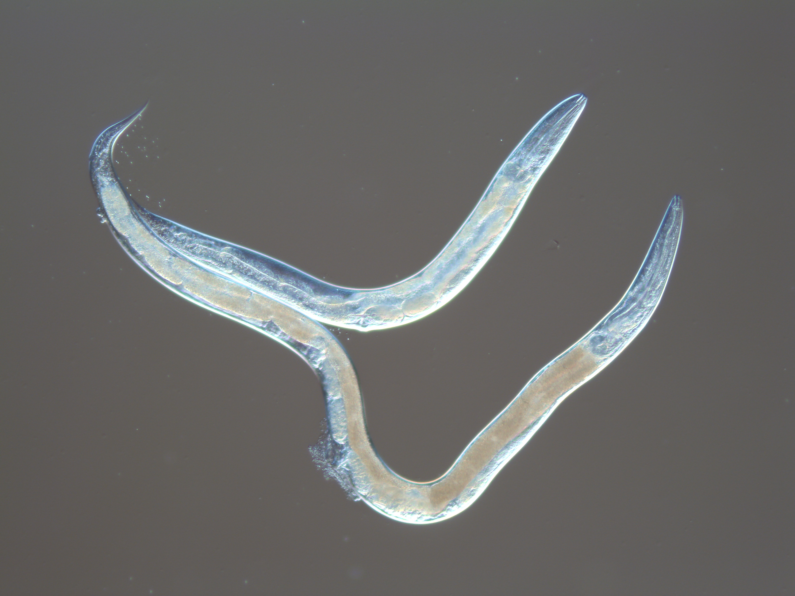

Fig Worm Lab

The Fig Worm Lab at the University of Oklahoma aims to understand the genetic basis of phenotypic diversity across multiple scales of biological organization. We are driven by these questions:
◾ How does genetic change lead to change in developmental processes?
◾ How does developmental variation promote morphological variation?
◾ What are the processes that generate and maintain genetic diversity in the first place?
We use various genetic, developmental, genomic, computational, and field approaches to address these questions. We also leverage the power of the Caenorhabditis elegans roundworm model system by focusing on its closest known relative, C. inopinata, which is morphologically divergent and lives in close association with figs and fig wasps.
We are recruiting graduate students for Fall 2021!! Please reach out if you are at all interested in working on the evolution, development, genomics, and/or ecology of nematodes!